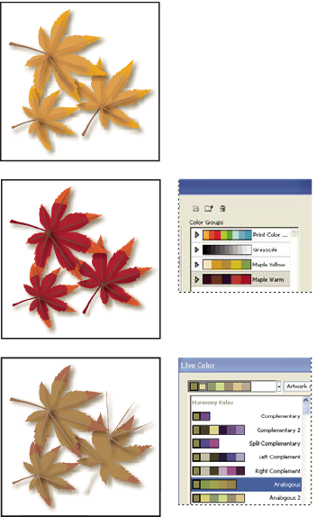
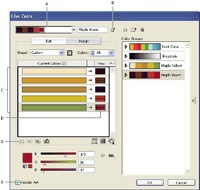

Assign colors to your artwork
-
Assign new colors to your artwork using a color group from the Color Groups list.
-
Assign new colors to your artwork using a new color group chosen from the Harmony Rule menu.
-
Reassign current artwork colors amongst themselves. You can reset the Live Color dialog box so that the artwork is displayed with its original colors by clicking Get Colors From Selected Art .

Using the Current Colors and New columns, you control how colors are assigned. When you select Recolor Art, the selected artwork is recolored with the active color group according to the columns assignments.

- A.
- Active color group
- B.
- Get Colors From Selected Art
- C.
- Colors from selected artwork
- D.
- New colors from active color group
- E.
- Exclude Row
- F.
- Recolor Artwork
For a video on assigning colors in Live Color, see www.adobe.com/go/vid0061.
 Assign new colors to selected artwork
Assign new colors to selected artwork
- Do any of the following to reassign colors:
-
To assign a current color to a different color, drag the current color up or down in the Current Colors column until it’s adjacent to the new color you want.
 If
a row contains multiple colors and you want to move them all, click
the selector bar at
the left of the row and drag up or down.
If
a row contains multiple colors and you want to move them all, click
the selector bar at
the left of the row and drag up or down. -
To assign a new color to a different row of current colors, drag the new color up or down in the New column.
-
To exclude a row of current colors from being reassigned, click the arrow between the columns. To include it again, click the dash.
-
To exclude a single current color from being reassigned, select the color and click Excludes Selected Colors So They Will Not Be Recolored .
-
To randomly reassign colors, click the Randomly Change Color Order button . The New colors move randomly to different rows of current colors.
-
To add a row to the Current Colors column, click Add A Row .
-
Randomly change saturation and brightness in all colors
View original colors in your artwork as you assign new colors
When you recolor selected artwork, the original colors are replaced by those in the selected color group. When deciding how to assign new colors, you may need to see where an original color (from the Current Colors column) appears in your artwork, especially if your artwork is very detailed or contains many original colors.